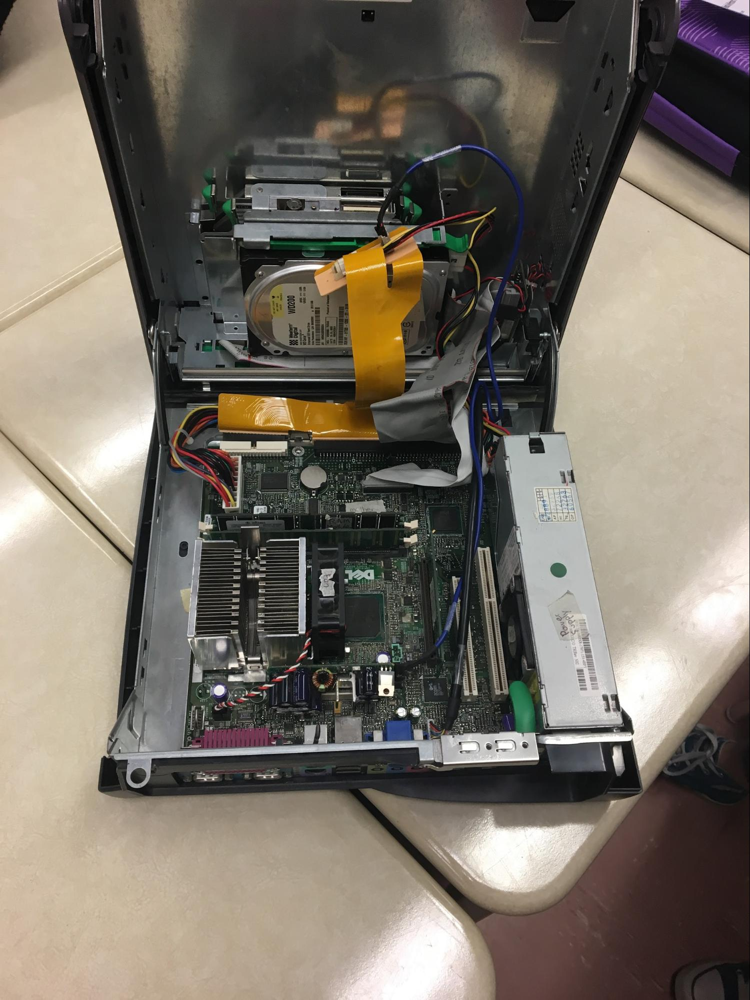

Sources
Floppy disk. (2017, June 06). Retrieved June 06, 2017, from https://en.wikipedia.org/wiki/Floppy_disk
How Do Computers Work? (n.d.). Retrieved June 06, 2017, from https://www.factmonster.com/science/computers-internet/how-do-computers-work
Sivarajah, P. (n.d.). UNIT 2.3 - Hardware - InternalComponents.ppt.
Xie , S. (n.d.). UNIT 2.4 - Storage.ppt.